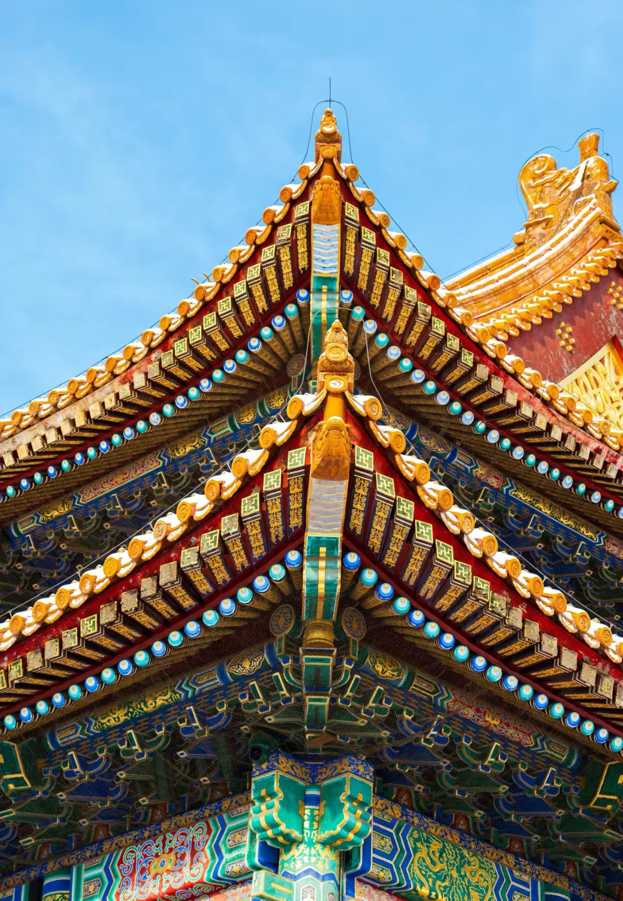
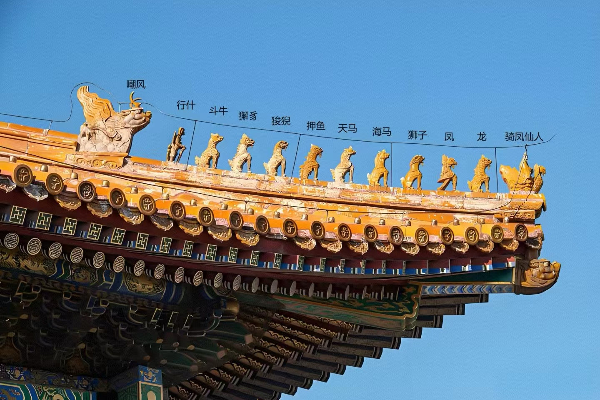
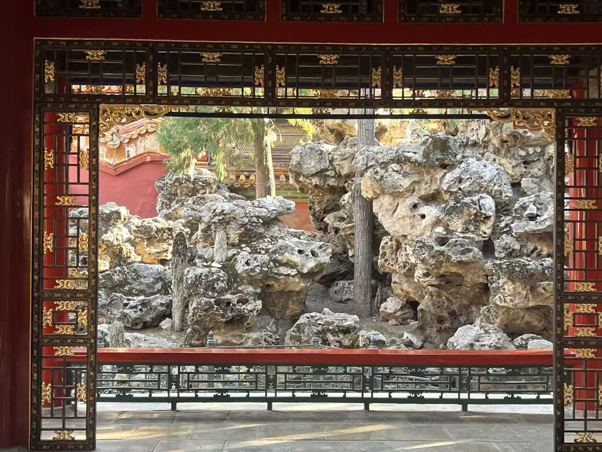
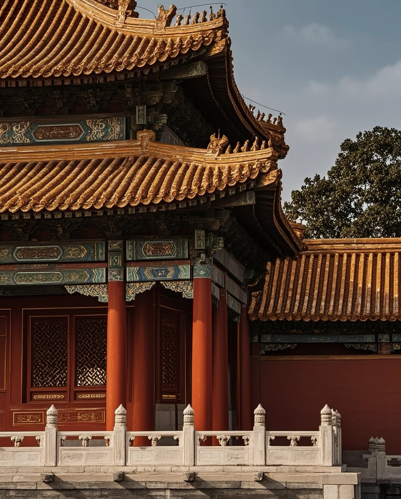
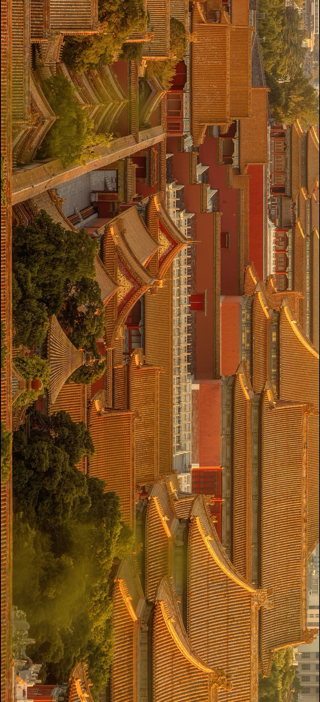

御花园集建筑、园林、礼制与哲学于一体，是中华优秀传统建筑文明的生动缩影。
是让中华传统营建智慧与文化精神的代代相传。
北京 · 中轴
御花园集建筑、园林、礼制与哲学于一体，是中华优秀传统建筑文明的生动缩影。
是让中华传统营建智慧与文化精神的代代相传。

太和殿以礼制为纲，以尺度为神。高台基托举殿体，层层出檐收束体量，视觉在"仰望"中完成秩序的建立。 远看是中轴的线，近看是木作与彩画的呼吸。每一道比例与间距，都在长期的经验里被反复校准。
画册式的留白，是为了让你听见材质：石的沉稳、木的温润、琉璃瓦的冷光、尘埃的浮游。它们共同构成一种"低频的庄严"。 不必堆砌信息，只需给空间足够的余裕，秩序就会自己讲述。



当我们说"东方美学"，其实是在说一种克制：让结构成为装饰，让比例替代繁复。中轴、台阶与开间的重复， 像一段被推敲、最终被定格的节拍。它不是符号，而是一套把经验写进空间里的算法。
因而，页面也遵循同样的纪律：非对称的排布、充分的页边距、让图像与文字交错但不拥挤。你不需要被告知"该看哪里"， 因为留白会引导视线。
